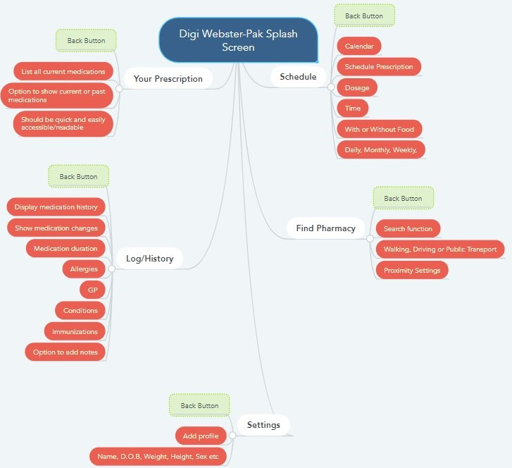

Artefact
Functional Design Document
This document is intended as a design document which will help explain the functional design of the app. It is not a visual design or mock-up but intended rather as both a document to see how the app will functionally work, and as a guide for designers to work from when creating the app in addition to the visual design mock-up artefact.
Function Flowchart
Below is a flowchart which is intended to show how the app would functionally operate. This is designed very similar to a mind map, with a central splash screen where the app opens, then linking to different sections. Each section must have a back button for the user to return to the splash screen. Within each section, there are lists or design considerations that have been specified to show exactly what each section must contain. This is crucial for team members when designing the app, as it keeps everyone operating on the same page so to speak. Like anything that is created, it is always good practice to have a design document that demonstrates what the product is intended to be. This is especially crucial in a team environment, otherwise each member would essentially be shooting in the dark. With a functional design document, in addition to the accompanying visual mock-up, it will ensure consistency.
Your Prescription
This section of the app is intended as a quick reference tool for the user. This will allow them to pull up a readily accessible list of their current prescription. A function can also be added to show a historical timeline of their prescription changes. This is handy for medical professionals as well, so designing it to be fast and easy to access is important.
Schedule
This section of the app is where the bulk of the work will take place. This is where users can add prescriptions and schedule them. Scheduling should have a daily, weekly, and monthly format option. It will also contain a option to remind the user to take it with or without food, what time of day it should be taken, the correct dosage, a calendar showing upcoming medications etc. When a prescription is set here, the reminder or alarm function should be automated, so that when the scheduled time is reached, an alarm sounds off telling the user it is time to take their medication. This alarm should sound repeatedly until the user has checked it off.
Find Pharmacy
This function is location based. It will likely use something like Google Maps. It is intended for the user to be able to find a local pharmacy, with the option of selecting how they will travel. A contact number for the pharmacy should be provided here also.
Log/History
Somewhat like the Your Prescription section, however this should be a little more detailed. It could include things like dates medications were prescribed, what GP prescribed them, the duration of taking them, were there any side effects, were changes made such as dosage and so on. A function for the user to add their own notes here will be useful as well. The users’ current medical conditions, immunization status and similar can be worked in here too.
Settings
This section will be used for the user to add a profile of themselves. It will simply contain basic information such as Name, D.O.B, height, weight, sex etc. This section of the app is quite minimal.